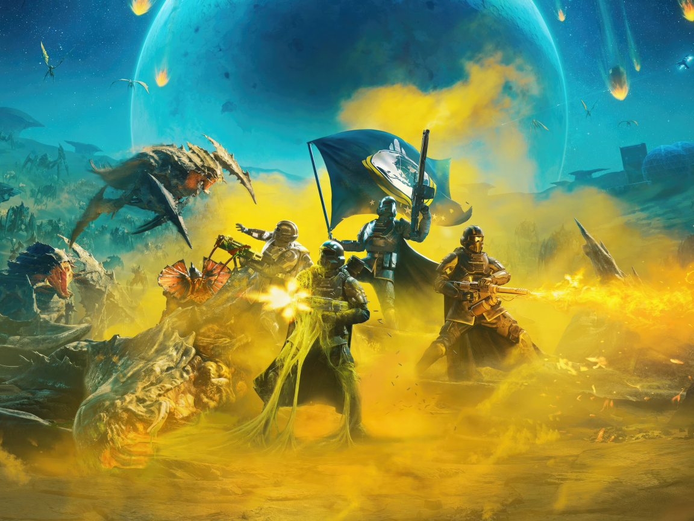
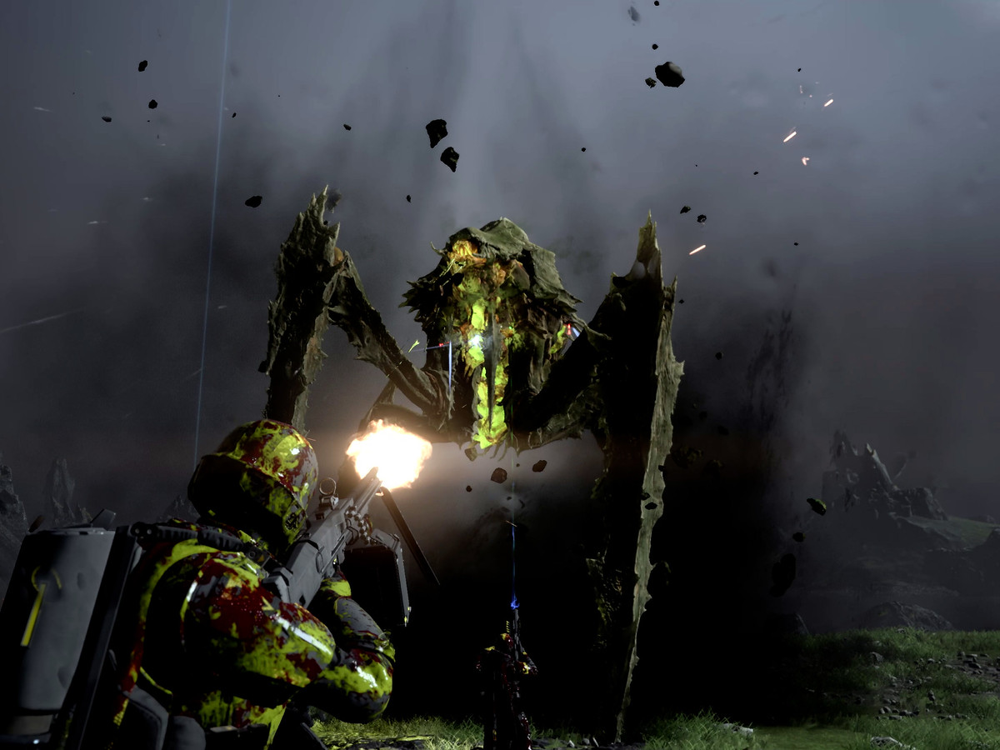
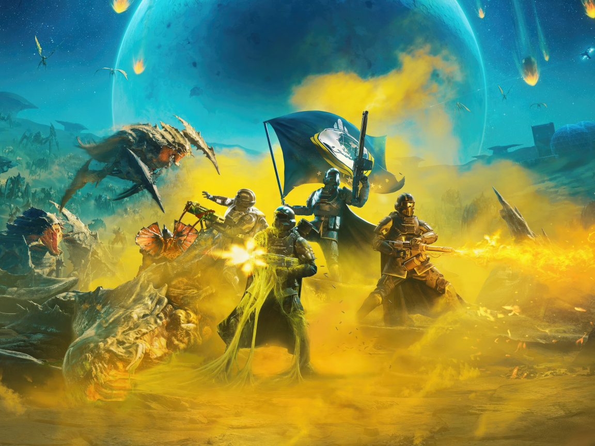
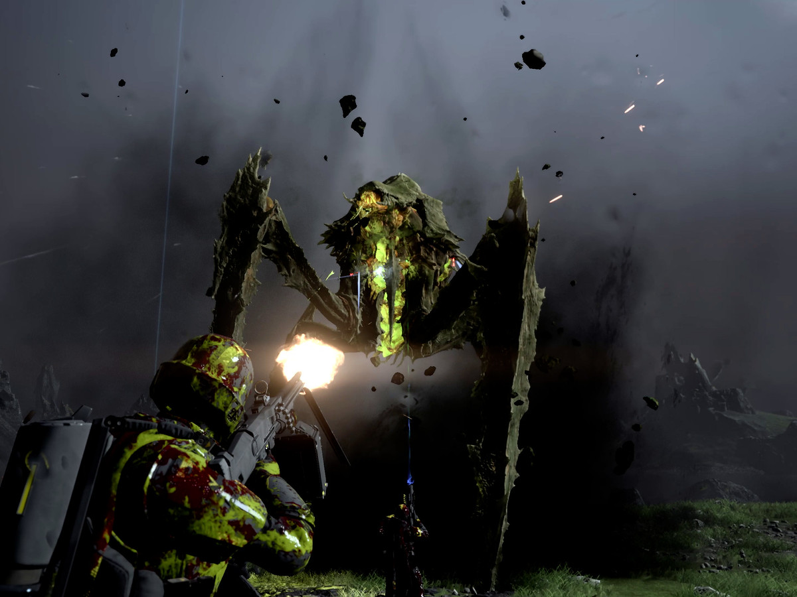

ABOUT
Helldivers 2 (stylised as Helldivers II) is a third-person shooter developed by Arrowhead Game Studios and published by Sony Interactive Entertainment. The game is the sequel to Helldivers, a 2015 top-down shooter. It was released for PlayStation 5 and Windows on 8 February 2024. It received positive reviews from critics and sold approximately one million units in the first three days since release.
Unlike Helldivers, which is a top-down shooter, Helldivers 2 is a third-person shooter. Similar to the first game, players are able to select Stratagems, air drops players can call during missions, which include cluster bombs, sentry guns, shield generators or supply pods containing limited-use special weaponry. Friendly fire is always on. The game's armor system is inspired by real firearms fired against armored targets. There is multiplayer with up to four players. It also provides a cross-play feature between PlayStation 5 and Windows players. In the initial days of the release, gameplay involved human observers at the studio influencing gameplay in real time.
-Wikipedia
IMAGES

 


